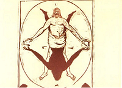
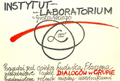
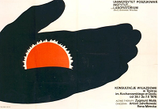
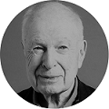

Ежи Гротовский.
Режиссер. Исследователь. Воин.
Ежи Гротовский (1933 — 1999) — польский театральный режиссер, исследователь актерских возможностей. Человек, изменивший навсегда представление о театре, о пути актера и смысле театрального действия. Экспериментатор и исследователь, он соединял ритуалы, духовную практику, профессиональную точность и безупречный вкус в произведения, которые сейчас мы называем перформансом.




Питер Брук, режиссер
«Гротовский уникален. Почему? Потому что ни один человек в мире, насколько мне известно, ни один со времен Станиславского, не постиг так глубоко и полно, как это сделал Гротовский, существо, феномен, природу, духовно-физически-эмоциональный комплекс актёрского творчества».